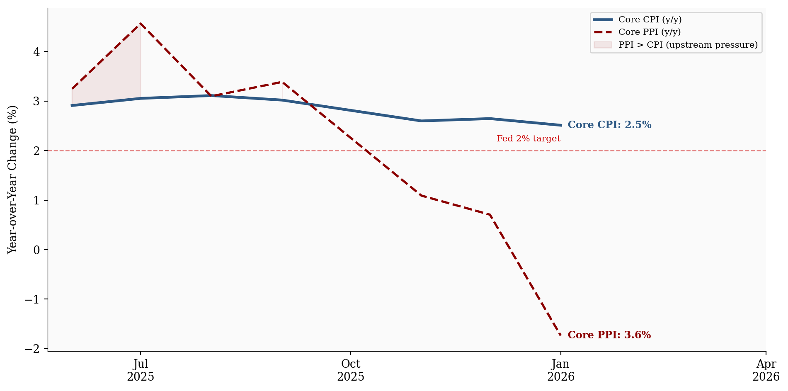
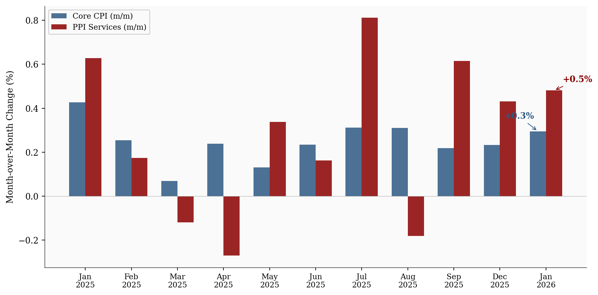
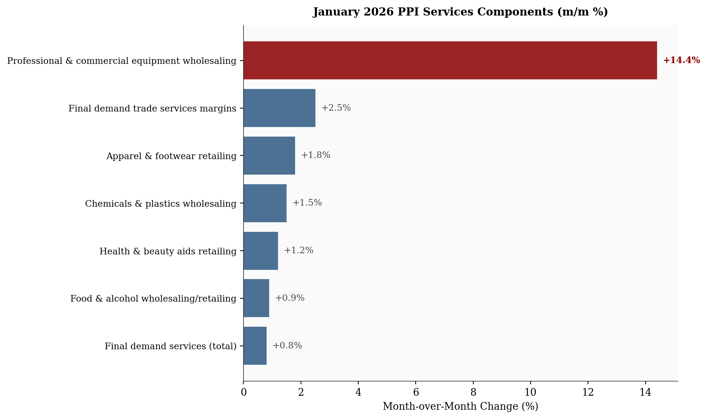
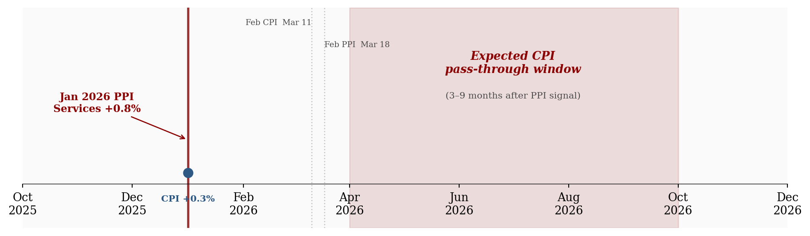

+0.3%
CPI Core (m/m)
+0.8%
PPI Services (m/m)
+2.5%
Trade Margins (m/m)
+3.6%
PPI Core (y/y)
Data as of January 2026 | Source: Bureau of Labor Statistics
PPI and CPI told two very different stories in January 2026. One calmed the markets. The other blindsided them.
March 1, 2026
On February 13, 2026, the Consumer Price Index for January landed soft: headline +0.2% month-over-month1 (below the +0.3% consensus), core +0.3% (in line), headline year-over-year at +2.4%. Rate-cut dreams stayed intact. Two weeks later, on February 27, 2026, the Producer Price Index detonated that calm. Headline PPI came in at +0.5% m/m versus +0.3% expected, but the real shock was buried one layer deeper: final demand services less food, energy, and trade services surged +0.8% month-over-month, the sharpest monthly services gain since July 2025. Dow futures dropped roughly 700 points intraday. The bond market flinched. “Higher for longer” was back.
How do two flagship inflation measures, released two weeks apart and covering the same month, tell such different stories?
All figures in this post are drawn from official BLS releases: the CPI Summary (February 13, 2026) and the PPI Detailed Report (February 27, 2026). Time-series charts use CPI and PPI index data from FRED. CPI and PPI use different methodologies, coverage, and weighting schemes; the BLS itself notes that “there are many reasons why the PPI and CPI may diverge.” Component-level PPI breakdowns (trade services margins, equipment wholesaling) are from the BLS detailed tables and are not available as FRED series.
Data as of January 2026 | Source: Bureau of Labor Statistics
These indices measure the same economy through fundamentally different windows. CPI captures what consumers pay at the register, including imports and sales taxes. PPI captures what producers receive at the wholesale level: upstream margins and business-to-business transactions that haven’t reached consumer shelves yet.
| Core CPI (ex food & energy) | Core PPI (ex food, energy & trade) | |
|---|---|---|
| Measures | Retail prices paid by consumers | Wholesale prices received by producers |
| Perspective | End consumer | B2B / early pipeline |
| Includes imports? | Yes | No |
| Third-party payments? | No (household spending only) | Yes (e.g. employer health plans) |
| Services scope | Broad (rent, medical, education) | Partial (excludes most govt services) |
| Lead / lag | Lagging indicator | Often leads CPI by 3-9 months |
| Jan 2026 m/m | +0.3% (as expected) | Services: +0.8% (big surprise) |
| Jan 2026 y/y | +2.5% | ~+3.6% (highest in ~10 months) |
CPI measures downstream consumer prices; PPI measures upstream producer prices. The January divergence was unusually wide.
That lead-lag relationship is the key detail. PPI often signals where CPI is headed three to nine months from now. When they diverge this sharply, it isn’t noise - it’s a warning.
# =============================================================================
# Exhibit 1b: Historical PPI vs CPI Year-over-Year (long view)
# =============================================================================
df_hist = df_monthly[['cpi_core_yoy', 'ppi_core_yoy']].dropna()
df_hist = df_hist.loc['2020-01':]
fig, ax = plt.subplots(figsize=(10, 5))
ax.axhline(y=2.0, color=COLORS['fed_target'], linestyle='--', linewidth=1, alpha=0.5)
ax.text(df_hist.index[-1], 2.15, 'Fed 2% target', fontsize=8, color=COLORS['fed_target'],
ha='right', va='bottom')
ax.plot(df_hist.index, df_hist['cpi_core_yoy'], color=COLORS['cpi'], linewidth=2.5,
label='Core CPI (y/y)')
ax.plot(df_hist.index, df_hist['ppi_core_yoy'], color=COLORS['ppi'], linewidth=2,
linestyle='--', label='Core PPI (y/y)')
# Shade periods where PPI > CPI (pipeline pressure building)
ax.fill_between(df_hist.index, df_hist['cpi_core_yoy'], df_hist['ppi_core_yoy'],
where=(df_hist['ppi_core_yoy'] > df_hist['cpi_core_yoy']),
alpha=0.08, color=COLORS['ppi'], label='PPI > CPI (upstream pressure)')
# Direct end labels
for col, color, label in [
('cpi_core_yoy', COLORS['cpi'], f"Core CPI: {stats['cpi_core_yoy']}%"),
('ppi_core_yoy', COLORS['ppi'], f"Core PPI: {stats['ppi_core_yoy']}%"),
]:
last_val = df_hist[col].iloc[-1]
ax.text(df_hist.index[-1], last_val, f' {label}',
fontsize=9, color=color, va='center', fontweight='bold')
ax.set_ylabel('Year-over-Year Change (%)')
ax.xaxis.set_major_formatter(mdates.DateFormatter('%b\n%Y'))
ax.xaxis.set_major_locator(mdates.MonthLocator(interval=3))
ax.set_xlim(right=df_hist.index[-1] + pd.Timedelta(days=90))
ax.legend(loc='upper right', fontsize=8)
plt.tight_layout()
plt.show()
Consensus forecasts had core PPI services2 landing between +0.3% and +0.6%. The actual +0.8% wasn’t just an upside miss; it was nearly double the high end of expectations. And it drove virtually the entire headline PPI beat.
The PPI release flipped rate-cut expectations overnight. Markets had been pricing ~60-70% odds of a June 2026 Fed cut after the dovish CPI print. Post-PPI, June cut probability dropped sharply. Two-year Treasury yields spiked roughly 10 basis points intraday. September became the new base case for most desks.
The sequencing mattered. A soft CPI lulled markets into complacency. Then PPI showed that upstream price pressures were accelerating, not cooling. The whiplash was sharp.
# =============================================================================
# CPI vs PPI Services: Month-over-Month Comparison
# =============================================================================
# Use CPI core and PPI core m/m columns from FRED data
df_plot = df_monthly[['cpi_core_mom', 'ppi_final_demand_mom']].dropna()
# Filter to recent months for clarity
df_plot = df_plot.loc['2025-01':]
fig, ax = plt.subplots(figsize=(10, 5))
x = np.arange(len(df_plot))
width = 0.35
bars_cpi = ax.bar(x - width/2, df_plot['cpi_core_mom'], width,
color=COLORS['cpi'], alpha=0.85, label='Core CPI (m/m)')
bars_ppi = ax.bar(x + width/2, df_plot['ppi_final_demand_mom'], width,
color=COLORS['ppi'], alpha=0.85, label='PPI Services (m/m)')
# Labels
month_labels = [d.strftime('%b\n%Y') for d in df_plot.index]
ax.set_xticks(x)
ax.set_xticklabels(month_labels, fontsize=9)
ax.set_ylabel('Month-over-Month Change (%)')
# Annotate the January 2026 PPI bar if present
if len(df_plot) > 0:
last_ppi = df_plot['ppi_final_demand_mom'].iloc[-1]
last_cpi = df_plot['cpi_core_mom'].iloc[-1]
ax.annotate(f'+{last_ppi:.1f}%', xy=(x[-1] + width/2, last_ppi),
xytext=(10, 10), textcoords='offset points',
fontsize=10, fontweight='bold', color=COLORS['ppi'],
arrowprops=dict(arrowstyle='->', color=COLORS['ppi'], lw=0.8))
ax.annotate(f'+{last_cpi:.1f}%', xy=(x[-1] - width/2, last_cpi),
xytext=(-40, 15), textcoords='offset points',
fontsize=10, fontweight='bold', color=COLORS['cpi'],
arrowprops=dict(arrowstyle='->', color=COLORS['cpi'], lw=0.8))
# Reference line at zero
ax.axhline(y=0, color=COLORS['light'], linewidth=0.5)
ax.legend(loc='upper left', fontsize=9, framealpha=0.9)
plt.tight_layout()
plt.show()
The BLS component breakdown tells the story clearly:
A +14.4% monthly increase in equipment wholesaling margins is extraordinary by any historical standard. This isn’t cost pass-through - it’s pricing power. Wholesalers actively expanding profit margins, not merely relaying higher input costs downstream.
# =============================================================================
# PPI Component Breakdown: What Drove the +0.8%
# =============================================================================
df_comp = df_components.sort_values('mom_change', ascending=True)
fig, ax = plt.subplots(figsize=(10, 6))
colors = [COLORS['accent'] if v > 5 else COLORS['primary'] for v in df_comp['mom_change']]
bars = ax.barh(range(len(df_comp)), df_comp['mom_change'], color=colors, alpha=0.85)
ax.set_yticks(range(len(df_comp)))
ax.set_yticklabels(df_comp['component'], fontsize=9)
ax.set_xlabel('Month-over-Month Change (%)')
# Value labels at end of each bar
for i, (val, bar) in enumerate(zip(df_comp['mom_change'], bars)):
ax.text(val + 0.2, i, f'+{val:.1f}%', va='center', fontsize=9,
fontweight='bold' if val > 5 else 'normal',
color=COLORS['accent'] if val > 5 else COLORS['neutral'])
# Reference line at zero
ax.axvline(x=0, color=COLORS['light'], linewidth=0.5)
ax.set_title('January 2026 PPI Services Components (m/m %)', fontsize=11,
fontweight='bold', pad=10)
plt.tight_layout()
plt.show()
This is the pattern that keeps Fed officials awake. When businesses can widen margins without losing volume, it signals demand strong enough to absorb price hikes. That is the textbook definition of persistent, demand-driven services inflation.
CPI, by contrast, looked tame for compositional reasons:
PPI caught the pressure upstream. CPI is still catching up.
The January data sets up five distinct pressure points for the rest of the year, each with its own timeline and implications.
Wider wholesale margins frequently translate into higher retail prices three to nine months later. If services margins stay elevated through Q1, core CPI could re-accelerate mid-to-late 2026, precisely when the Fed wants to be cutting, not worrying about a second inflation wave.
# =============================================================================
# PPI-to-CPI Pass-Through Timeline
# =============================================================================
fig, ax = plt.subplots(figsize=(10, 3))
months = pd.date_range('2025-10-01', '2026-12-01', freq='MS')
ax.set_xlim(months[0], months[-1])
ax.set_ylim(0, 1)
# Remove y-axis (this is a schematic, not a data chart)
ax.set_yticks([])
ax.spines['left'].set_visible(False)
ax.spines['bottom'].set_position(('data', 0.2))
# Pass-through window shading
passthrough_start = pd.Timestamp('2026-04-01')
passthrough_end = pd.Timestamp('2026-10-01')
ax.axvspan(passthrough_start, passthrough_end, alpha=0.12, color=COLORS['ppi'],
zorder=0)
ax.text(pd.Timestamp('2026-07-01'), 0.75, 'Expected CPI\npass-through window',
ha='center', va='center', fontsize=10, color=COLORS['ppi'],
fontweight='bold', fontstyle='italic')
ax.text(pd.Timestamp('2026-07-01'), 0.6, '(3-9 months after PPI signal)',
ha='center', va='center', fontsize=8, color=COLORS['neutral'])
# PPI event marker
ppi_date = pd.Timestamp('2026-01-01')
ax.axvline(x=ppi_date, color=COLORS['ppi'], linewidth=2, linestyle='-', alpha=0.8)
ax.annotate('Jan 2026 PPI\nServices +0.8%', xy=(ppi_date, 0.4),
xytext=(-80, 25), textcoords='offset points',
fontsize=9, fontweight='bold', color=COLORS['ppi'], ha='center',
arrowprops=dict(arrowstyle='->', color=COLORS['ppi'], lw=1))
# CPI event marker
cpi_date = pd.Timestamp('2026-01-01')
ax.plot(cpi_date, 0.25, 'o', color=COLORS['cpi'], markersize=8, zorder=5)
ax.text(cpi_date, 0.12, 'CPI +0.3%', ha='center', fontsize=8,
color=COLORS['cpi'], fontweight='bold')
# Next release markers
ax.axvline(x=pd.Timestamp('2026-03-11'), color=COLORS['light'], linewidth=1,
linestyle=':', alpha=0.7)
ax.text(pd.Timestamp('2026-03-11'), 0.95, 'Feb CPI Mar 11',
ha='right', va='top', fontsize=7, color=COLORS['neutral'], rotation=0)
ax.axvline(x=pd.Timestamp('2026-03-18'), color=COLORS['light'], linewidth=1,
linestyle=':', alpha=0.7)
ax.text(pd.Timestamp('2026-03-18'), 0.85, 'Feb PPI Mar 18',
ha='left', va='top', fontsize=7, color=COLORS['neutral'], rotation=0)
# Format x-axis
ax.xaxis.set_major_formatter(mdates.DateFormatter('%b\n%Y'))
ax.xaxis.set_major_locator(mdates.MonthLocator(interval=2))
plt.tight_layout()
plt.show()
Chair Powell has staked credibility on engineering a smooth return to the 2% target. The January PPI complicates that narrative. Annualize a +0.8% monthly services print and you’re looking at nearly 10.0%, obviously unsustainable if it persists. June 2026 rate-cut odds cratered post-release. Some desks are now penciling in no cuts at all this year. The FOMC tension is real: doves want to ease before labor markets crack, hawks point to exactly this kind of print as proof the job isn’t done.
For fixed income: If services inflation re-accelerates and PPI leads CPI by the historical three-to-nine-month window, the late-2025 bond rally was built on shaky ground. Long-duration Treasuries priced for a cutting cycle could reprice sharply. The 10-year yield, which had drifted toward the low 4s, may have further to climb.
For equities: The picture is split. Companies exposed to services input costs (healthcare, professional services, logistics) may see margin compression if they can’t pass costs downstream. Conversely, the wholesalers generating those margin expansions are thriving for now. Pricing power is the most valuable asset in an inflationary environment. Goods-heavy sectors still benefit from ongoing goods disinflation.
For real assets: Persistent services inflation combined with tariff uncertainty is constructive for gold and select commodities. If “higher for longer” reasserts as the dominant narrative, inflation hedges tend to outperform.
Early 2026 tariff signaling appears to be manifesting first as margin expansion rather than raw goods inflation. Wholesalers may be front-running expected cost increases by raising prices preemptively. If true, this PPI print reflects not just current demand but anticipated supply-side disruptions, a pattern that could keep core services sticky even as goods prices remain soft.
Nominal wage growth has been running around 3.5-4% year-over-year. With headline CPI near 2.4%, real wages remain positive and consumers keep spending. But if PPI-to-CPI pass-through materializes and core CPI drifts back above 3% by late 2026, that cushion evaporates. Discretionary spending absorbs the hit first: restaurants, travel, electronics. The two-speed inflation dynamic (cheap goods, expensive services) continues to squeeze households that spend disproportionately on services like healthcare, childcare, and housing.
For the Fed: The smooth glide path back to 2% just got a lot bumpier. The January PPI print is not sufficient to change the rate trajectory on its own, but two or three more readings like this would force a material hawkish repricing.
For investors: Watch the margin data. If wholesale trade services margins stay elevated in the February PPI (March 18, 2026), the pass-through risk to consumer prices, and to the rate-cut calendar, becomes much harder to dismiss.
For consumers: The headline CPI looks fine today. But the upstream pipeline is pressurized. If you’ve noticed prices at the register creeping up in categories like electronics, apparel, or health and beauty, the PPI data suggests that trend has legs.
Next key prints:
If the margin expansion story continues into February’s data, “higher for longer” could easily become “higher for even longer,” and the 2026 rate-cut calendar may need to be rewritten entirely.
All time-series data sourced from FRED (Federal Reserve Economic Data). Component-level PPI breakdowns from BLS detailed release tables.
| Series | Description | Source |
|---|---|---|
| CPIAUCSL | CPI-U All Items, Seasonally Adjusted | BLS via FRED |
| CPILFESL | CPI-U Less Food & Energy, SA | BLS via FRED |
| PPIFIS | PPI Final Demand Services, SA | BLS via FRED |
| WPSFD4111 | PPI Final Demand less Food, Energy & Trade, SA | BLS via FRED |
| PPI Detailed Report | Component-level PPI (trade margins, equipment wholesaling) | BLS |
| CPI Summary | January 2026 CPI release | BLS |
Data current as of February 27, 2026 (January 2026 PPI release).
Month-over-month (m/m) measures the percentage change in a price index from one month to the next. It captures short-term momentum but can be noisy. To gauge what a single month’s reading would imply over a full year, analysts sometimes annualize it, compounding the monthly rate twelve times: (1 + m/m)12 − 1. A +0.3% monthly print annualizes to roughly 3.7%; a +0.8% print annualizes to nearly 10%. Annualization is useful for context but misleading if treated as a forecast, since no single month sustains its pace indefinitely. Year-over-year (y/y) is the more stable measure: it compares the index level to the same month twelve months earlier, smoothing out monthly volatility.↩︎
Core PPI services here refers to the BLS measure “final demand services less food, energy, and trade services,” the narrowest and most policy-relevant cut of producer services inflation.↩︎